A moda é a porta. Vista-se de quem você é.
Estilo, identidade e legado masculino · Apresentação do projeto para Annie e Sóstenes
A moda é a porta.
O assunto é maior.
Uso o estilo pra falar de identidade, autoestima, paternidade e legado. Conteúdo de moda acessível pra quem quer se vestir de quem é.
Eu cresci me espelhando em homens que se pareciam comigo. Os caras do hip hop, do soul, do basquete. Pretos que entravam em qualquer lugar de cabeça erguida porque sabiam o que estavam vestindo.
Com o tempo, fui refinando meu gosto. E percebi: estilo nunca foi sobre dinheiro. É sobre saber quem você é e ter coragem de mostrar.
Eu não tô aqui pra te ensinar nada. Tô aqui pra mostrar como eu faço, e dizer uma coisa simples: você também pode.
Conteúdo de estilo e identidade pra homens que querem se reconhecer e ser respeitados, sem depender de grife.
Raiz, acessível, fala a sua língua.
Curioso, sempre aprendendo e refinando.
Sofisticado sem ser esnobe. Acessível sem ser raso.
A moda puxa o público. As conversas maiores criam o vínculo.
Uma estética só.
Streetwear adulto, quiet luxury e raiz negra. Volume, neutro e um ponto de cor.
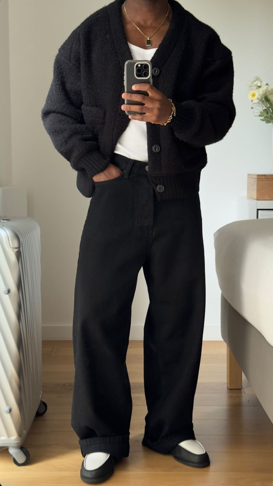
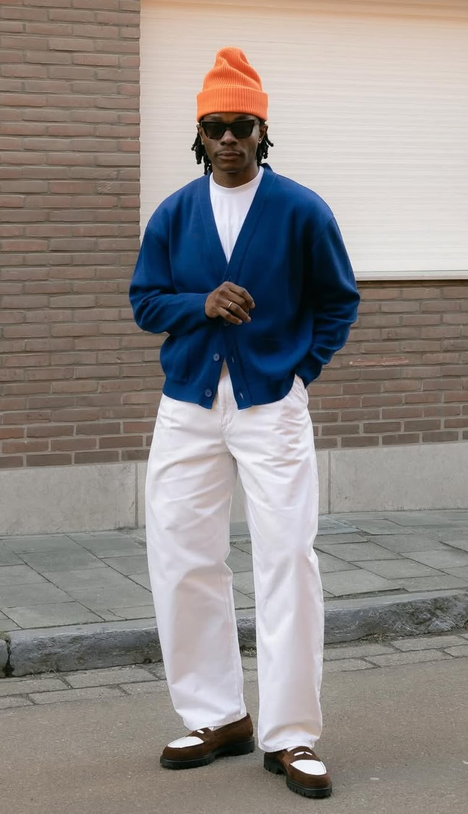
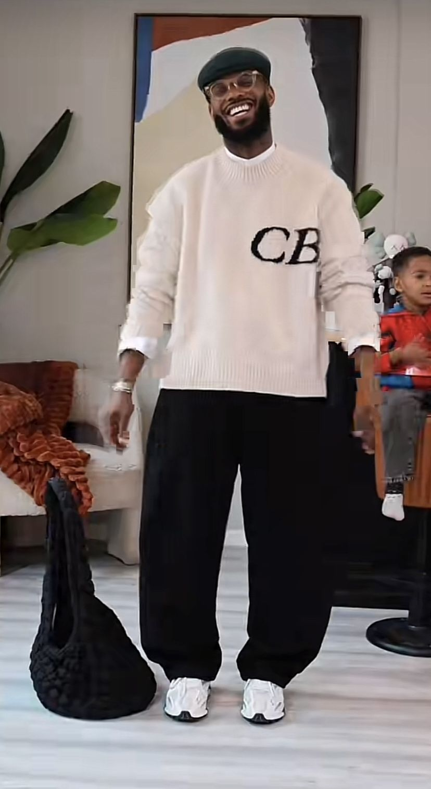
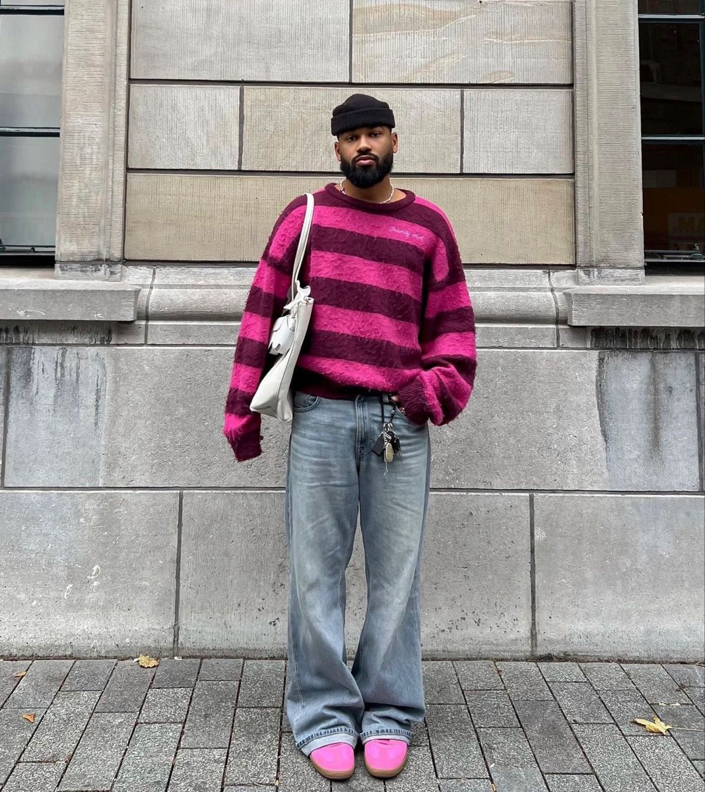
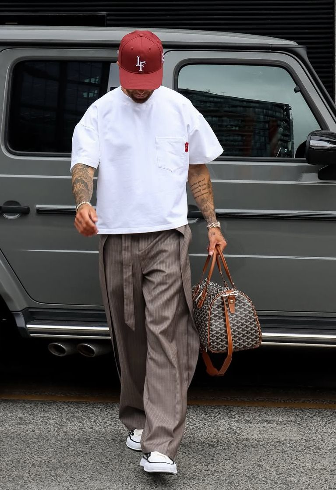
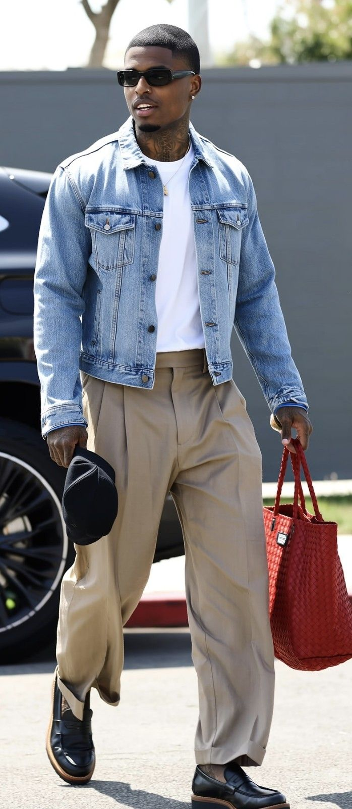
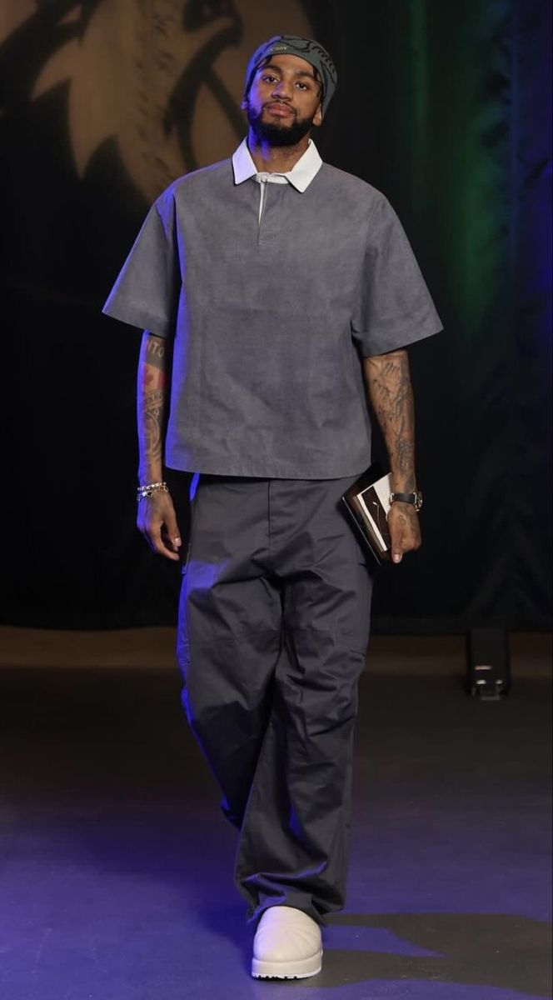
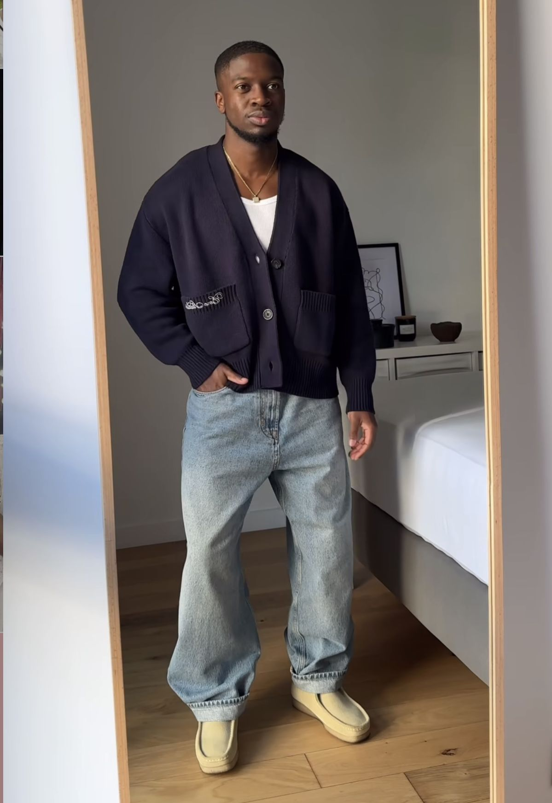
Volume embaixo, ajuste em cima, base branca.
80% neutro (preto, cru, cinza, bege, marrom) mais um ponto de cor por look. Cardigã · calça larga · jeans baggy · boné LF · loafer · corrente.
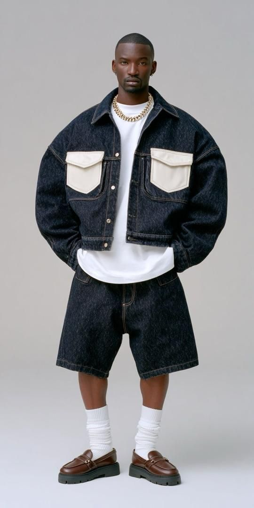
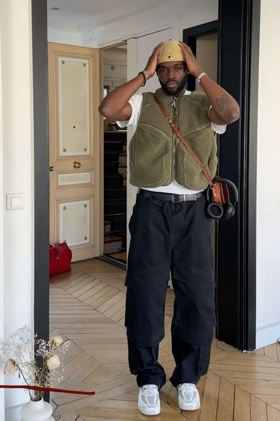
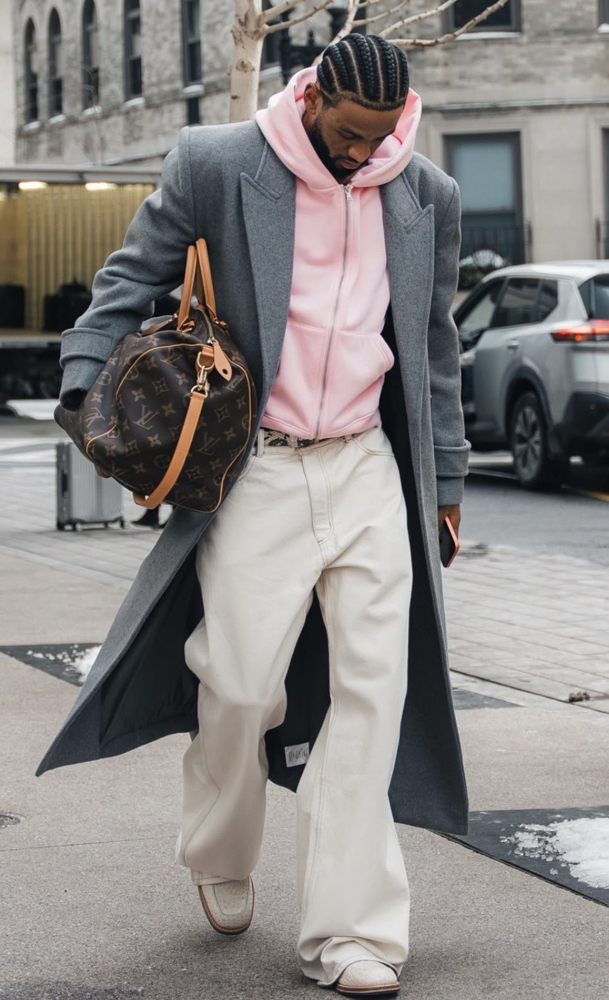
Não é uniforme. São peças que são a minha cara, repetidas com intenção.
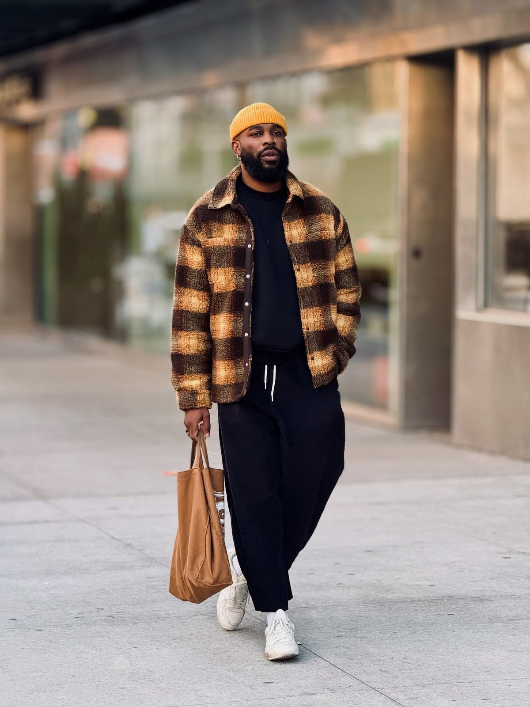
Branca, calça larga, boné, tênis
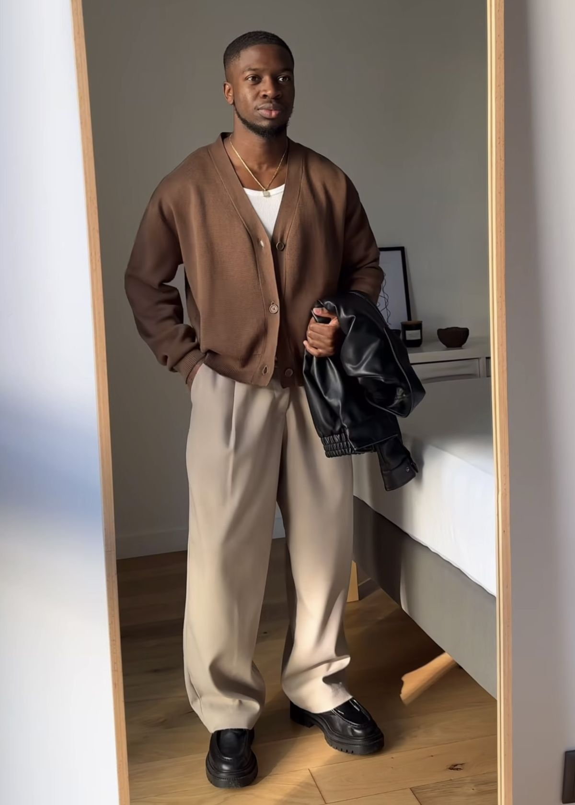
A minha assinatura
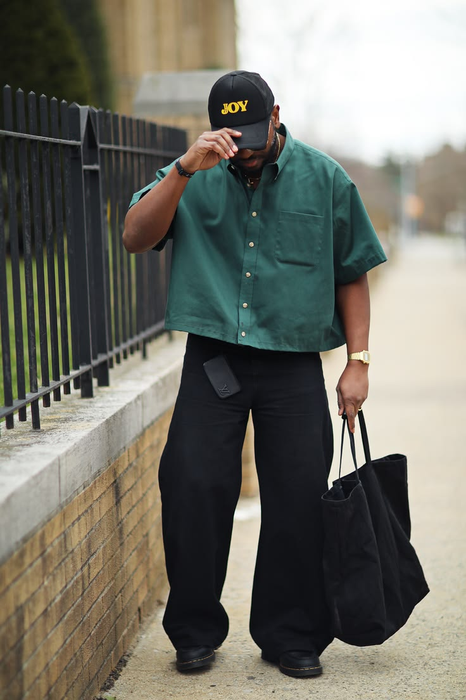
Alfaiataria larga, autoridade
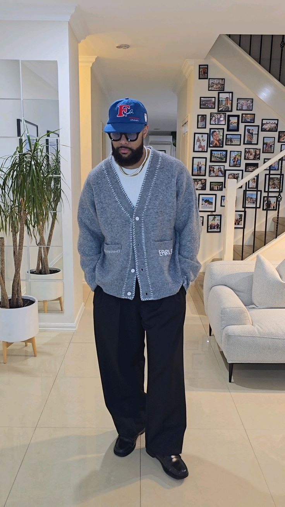
Base neutra, uma peça forte
A pergunta não é quanto custa.
É: isso é a minha cara e vai durar?
Influência e conteúdo. Imagem, pesquisa e curadoria da marca.
Personal stylist e moda. Referências, tendências, site, parcerias, patrocínios e convites para desfiles.
Conteúdo e temas. Pesquisa de pautas (paternidade, desenvolvimento pessoal, comunidade) e apoio à oratória e ao carisma de fala.
A moda é a porta.
Vista-se de quem você é.
Vamos juntos.